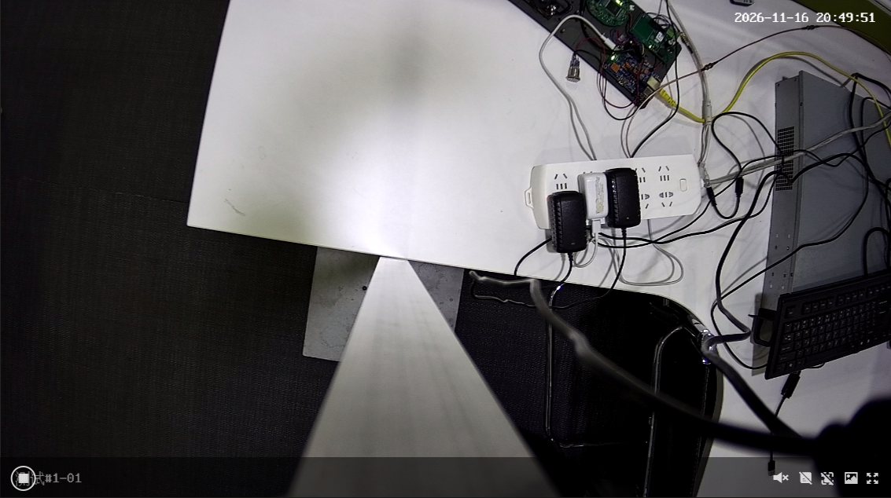
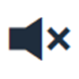
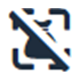
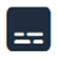
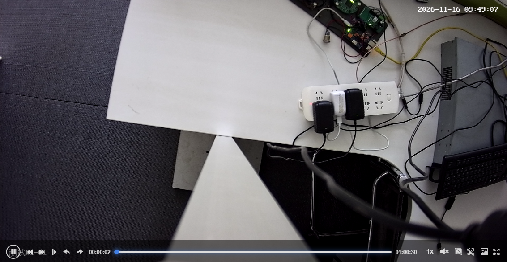

视频进度控制
| 图标 | 控件 | 作用 | 说明 |
|---|---|---|---|
| 停止播放 | 停止实时画面 | 停止后画面关闭 |
播放器控制
| 图标 | 控件 | 作用 | 说明 |
|---|---|---|---|
 |
音量 / 静音 | 调整声音大小或静音 | 点击图标切换静音，展开后可拖动滑块调整音量 |
| 目标（开启） | 画面显示智能分析目标框 | 与「关闭」切换 | |
 |
目标（关闭） | 画面不显示目标框 | 与「开启」切换 |
 |
字幕（开启） | 画面显示字幕 | 与「关闭」切换；该画面有字幕时才可用 |
| 字幕（关闭） | 画面不显示字幕 | 与「开启」切换；该画面有字幕时才可用 | |
| 截图 | 截取当前画面并保存为图片 | 图片保存到浏览器默认下载位置 | |
| 全屏 | 全屏显示当前画面 | 按 Esc 或 F11 退出全屏 |

视频进度控制
| 图标 | 控件 | 作用 | 说明 |
|---|---|---|---|
| 播放 | 开始或继续播放录像 | 与「暂停」切换 | |
| 暂停 | 暂停录像 | 与「播放」切换 | |
| 慢放 | 降低播放速度 | 每点一次降低一档；最低 1/16x，再点一次恢复 1x | |
| 快进 | 提高播放速度 | 每点一次提高一档；最高 8x，再点一次恢复 1x | |
| 单帧进 | 向前播放一帧 | 暂停后使用，便于逐帧查看 | |
| 退 30 秒 | 把播放位置向前倒回 30 秒 | — | |
| 进 30 秒 | 把播放位置向后跳过 30 秒 | — | |
| 进度条 | 直接定位到录像的任意时间 | 拖动进度条上的圆点调整位置 | |
| 当前时间 / 总时长 | 显示已播放时间和录像总长度 | 格式为 时:分:秒 | |
| 1x | 倍速 | 显示并选择当前播放速度 | 鼠标移到倍速数字上弹出列表，可选择 8x～1/16x；与慢放、快进同步变化 |
播放器控制
| 图标 | 控件 | 作用 | 说明 |
|---|---|---|---|
| 音量 / 静音 | 调整声音大小或静音 | 点击图标切换静音，展开后可拖动滑块调整音量 | |
| 目标（开启） | 画面显示智能分析目标框 | 与「关闭」切换 | |
| 目标（关闭） | 画面不显示目标框 | 与「开启」切换 | |
| 字幕（开启） | 画面显示字幕 | 与「关闭」切换；该录像有字幕时才可用 | |
| 字幕（关闭） | 画面不显示字幕 | 与「开启」切换；该录像有字幕时才可用 | |
| 截图 | 截取当前画面并保存为图片 | 图片保存到浏览器默认下载位置 | |
| 全屏 | 全屏显示当前画面 | 按 Esc 或 F11 退出全屏 |